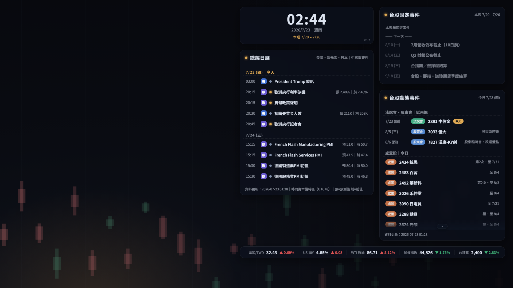

總經日曆、台股事件、即時行情條，全在你的桌面上。深色毛玻璃風格，資料每 6 小時自動更新，原生 WebView2 渲染、穩定不崩。

Forex Factory 美國・歐元區・日本中高重要性事件，含預測/前值，跟隨系統時區顯示。
法說會・股東會預告＋處置股（當日制、遇休市自動順延），資料來自 TWSE／TPEx。
13 檔跑馬燈：加權・台積電・道瓊・費半・SOFR…，紅漲綠跌。
深色毛玻璃質感，介面縮放／不透明度／模糊／強調色皆可在 Lively 屬性面板即時調。
setup.bat — 自動裝 Python 與 Lively、建立每 6 小時自動更新排程、抓一次最新資料。finance-calendar.html 拖進去設成桌布 — 完成 ✅ 桌面即顯示最新資料。＞ 完整說明見 README。